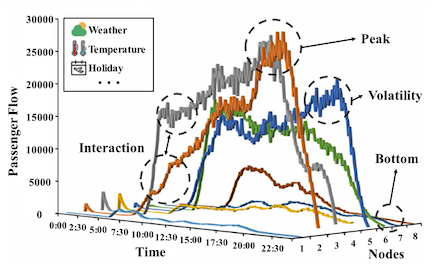
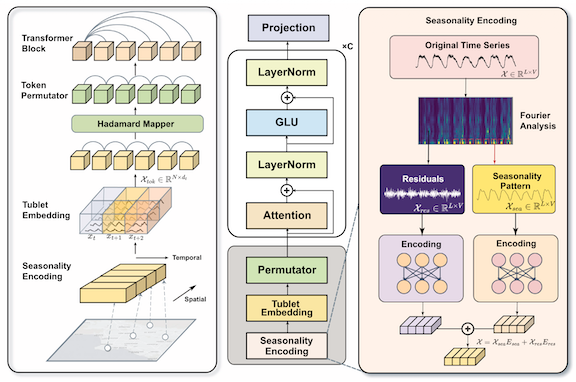
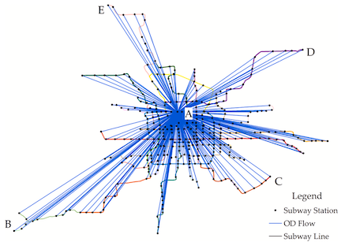
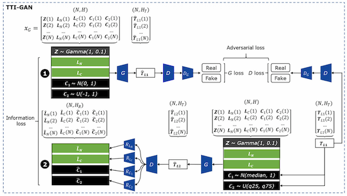
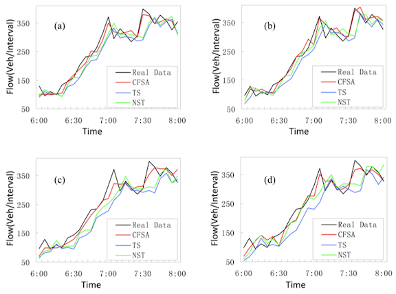
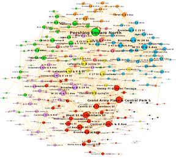
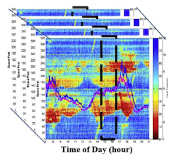
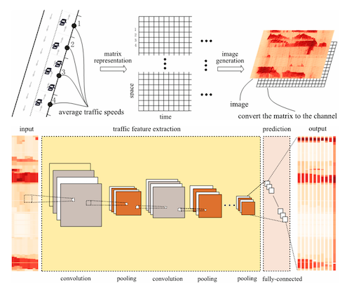

Mobility Prediction: Traffic States, Travel Times, and Demand
Overview
Mobility prediction uses historical and real-time data to estimate future traffic states, travel times, and travel demand across transportation systems. Accurate predictions help agencies anticipate congestion, allocate resources, operate mobility services, and provide reliable traveler information, while their quality depends on data completeness, feature design, and spatiotemporal modeling.
Our studies advance mobility prediction across data preparation, feature selection, deep learning architectures, and applications from road networks to multimodal transportation systems:
- Accurate mode-specific passenger flow prediction is essential for coordinating large transportation hubs, yet conventional methods often aggregate total passenger volume and overlook dependencies among access modes. We proposed MM-STFlowNet, which integrates temporal signal processing, spatial-temporal dynamic graph modeling, channel attention, and external factors to deliver state-of-the-art performance, particularly during peak periods[1].
- The growing scale of interregional travel creates demand for large-scale collaborative traffic forecasting, but existing deep models are often computationally expensive and not designed for state-level networks. We developed the Spatiotemporal Fusion Transformer with seasonality encoding, tubelet embedding, and graph-informed token permutation, improving forecasting accuracy while achieving up to a 4.46× speedup[2].
- Real-time urban rail OD prediction is challenging because OD matrices are delayed, high-dimensional, and sparse. We proposed CAS-CNN, combining split convolution, channel-wise attention, inflow/outflow gating, and masked loss to improve short-term OD demand prediction on large-scale metro networks[3].
- Vehicle trajectories provide network-wide travel-time information, but sparse and low-resolution trajectory data leave many road links without sufficient observations. We developed TTI-GAN to exploit network-wide spatiotemporal correlations and travel-time distributions, enabling accurate imputation under different missing-data rates[4].
- Although forecasting algorithms have been widely studied, selecting the right input features for a specific short-term traffic forecasting task remains underexplored and can strongly affect accuracy. We proposed a cohesion-based heuristic feature selection method that serves as a preprocessing step and improves the performance of multiple forecasting algorithms on empirical traffic data[5].
- Station-level bike-sharing demand reflects complex and heterogeneous relationships among stations that predefined spatial structures cannot fully represent. We developed a graph convolutional neural network with a data-driven graph filter to learn hidden pairwise correlations and temporal dependencies, outperforming benchmark models on a large-scale New York City bike-sharing dataset[6].
- Dynamic travel-time forecasting on urban expressways is difficult because traffic states are nonlinear and nonstationary, while simple one-dimensional or nearest-neighbor approaches cannot fully represent high-dimensional spatiotemporal evolution. We proposed a probe data-driven pattern-matching method that extracts features from speed contour plots, matches current conditions to historical spatiotemporal traffic patterns, and produces robust multi-step travel-time forecasts[7].
- Large-scale road speed prediction must capture network-wide spatial and temporal dependencies, but traditional approaches often treat traffic speeds as simple sequences and struggle with complex network topology. We transformed traffic states into two-dimensional time-space images and developed a deep convolutional neural network for feature extraction and network-wide speed prediction, substantially outperforming conventional and deep-learning benchmarks[8].
Publications

[1]MM-STFlowNet: A Transportation Hub-Oriented Multi-Mode Passenger Flow Prediction Method via Spatial-Temporal Dynamic Graph Modeling

[2]Spatiotemporal Fusion Transformer for Large-Scale Traffic Forecasting

[3]Short-Term Origin-Destination Demand Prediction in Urban Rail Transit Systems: A Channel-Wise Attentive Split-Convolutional Neural Network Method

[4]A Generative Adversarial Network for Travel Times Imputation Using Trajectory Data

[5]A Cohesion-Based Heuristic Feature Selection for Short-Term Traffic Forecasting

[6]Predicting Station-Level Hourly Demand in a Large-Scale Bike-Sharing Network: A Graph Convolutional Neural Network Approach

[7]Probe Data-Driven Travel Time Forecasting for Urban Expressways by Matching Similar Spatiotemporal Traffic Patterns

[8]Learning Traffic as Images: A Deep Convolutional Neural Network for Large-Scale Transportation Network Speed Prediction